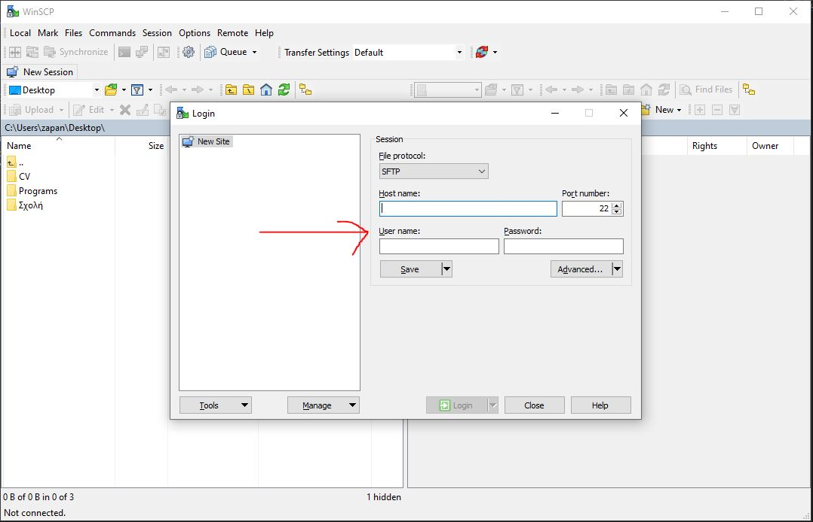

Οδηγίες Εγκατάστασης winscp
Το πρόγραμμα αυτό είναι ένα εξαιρετικά χρήσιμο εργαλείο για την μεταφορά αρχείων μεταξύ υπολογιστών
Για την εγκατάσταση
Το πρόγραμμα αυτό απευθύνεται αποκλειστικά σε χρήστες με λειτουργικό Windows. Αφού πατήσετε τον παραπάνω σύνδεσμο, θα κατέβει αυτόματα το setup.
Ανοίξτε το αρχείο που κατέβηκε. Στο πρώτο παράθυρο που θα ανοίξει, επιλέξτε "Install for all users". Στην επόμενη οθόνη επιλέξτε "Accept".
Ύστερα, πατήστε την επιλογή "Typical installation" και "Next". Μετά, επιλέξτε "Commander" και "Next". Τέλος πατήστε "Install" και στο επόμενο παράθυρο επιλέξτε "Finish".
Όταν ανοίξετε το πρόγραμμα θα σας εμφανιστεί ένα παράθυρο. Στην επιλογή "Host name:"
πληκτρολογείτε έναν από τους παρακάτω υπολογιστές του εργαστηρίου της σχολής: linux_lab_machines .
Στην επιλογή "User name: " και "Password: " πληκτρολογείτε τα αντίστοιχα στοιχεία σας (σας έχουν δοθεί από την γραμματεία). Το Username είναι της μορφής sdi2000XXX.
Επιλέξτε "Login" και είστε έτοιμοι!

Στο παράθυρο πλέον βλέπετε αριστερά τα folders/files του υπολογιστή που βρίσκεστε και δεξιά τα folders/files του υπολογιστή που συνδεθήκατε. Με απλό drug & drop μπορείτε να μεταφέρετε
αρχεία από το ένα σύστημα στο άλλο (αλλιώς πλοηγηθείτε με τις επιλογές που δίνονται από πάνω).